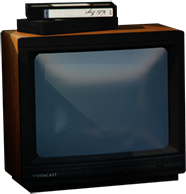
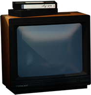
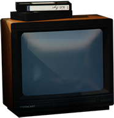
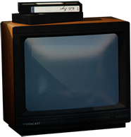

Du 3 au 9 mars Tbilissi est secouée par une vague de manifestations en la mémoire du dictateur Staline, elles cristallisent le sentiment antisoviétique.Le mouvement est réprimé dans un bain de sang. Plus d’une centaine de jeunes sont tués par les forces spéciales soviétiques.

Niaz Diasamidze est le chanteur et leader de 33a, un groupe de folk rock géorgien fondé en 1994 à Tbilissi. 33a livre un métissage du folk français et géorgien avec des éléments pop et reggae, sur des textes principalement en géorgien parfois en français. Le nom du groupe fait référence au numéro de l’immeuble de la rue Paliachvili à Tbilissi où habite Niaz Diasamidze.
33a
Galaktioni
 



Ministre de la Justice
Métropolite de Koutaïssi

Premier ministre

Mécanicien auto

Historien et journaliste

Président